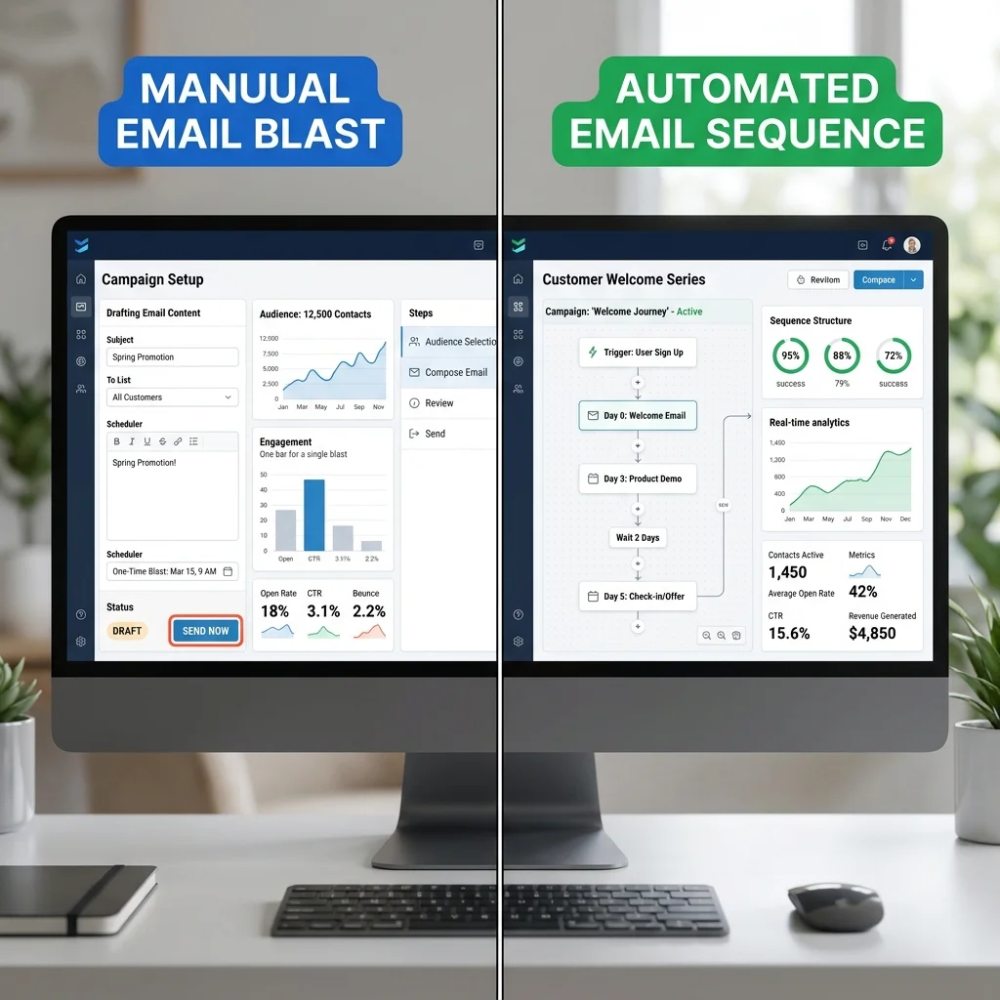

Emailing traditionnel vs automation : les différences
L'emailing classique consiste à envoyer des campagnes ponctuelles à une liste de contacts. L'automation, elle, déclenche des emails en fonction d'actions ou de comportements.

Quand utiliser l'emailing traditionnel ?
- Newsletters hebdomadaires ou mensuelles
- Annonces de nouveaux produits ou promotions
- Invitations à des événements
Quand utiliser l'automation ?
- Emails de bienvenue
- Relances d'abandon de panier
- Campagnes de réengagement
- Suivi post-achat personnalisé
Comment combiner les deux ?
Une stratégie gagnante utilise l'emailing pour les communications de masse et l'automation pour les interactions personnalisées. Par exemple, envoyez une newsletter mensuelle (emailing) et déclenchez des emails automatisés pour les actions spécifiques.
Want to implement these strategies effortlessly? Our DatRey experts handle it for you.
Exemple de mix réussi
- Campagne de lancement produit : emailing pour l'annonce, automation pour les rappels
- Fidélisation : automation pour les anniversaires, emailing pour les offres spéciales

Mesurez vos résultats
Utilisez des indicateurs communs : taux d'ouverture, clics, désabonnements. Comparez les performances de chaque approche pour ajuster votre stratégie.

Conclusion
Ni l'emailing ni l'automation ne sont meilleurs en absolu. L'idéal est de les combiner intelligemment pour toucher vos clients de manière pertinente.